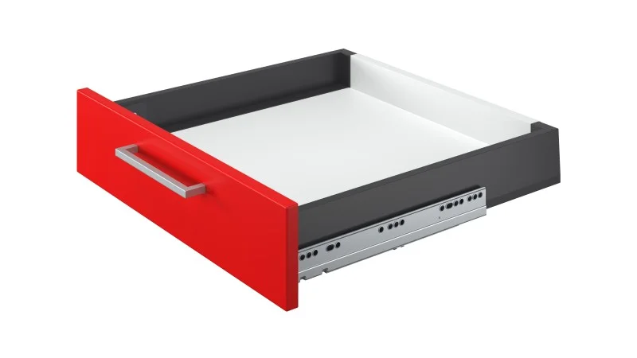

Как устроена модель
BOYARD показывает системы выдвижения и крепёж, MAKMART — мебельные комплектующие. Покупатель часто знает, что ящик заедает, но не знает артикул. Подбор по глубине корпуса и схеме крепления даёт магазину преимущество перед продажей одной направляющей.
Что предложить покупателю
Расскажите на лендинге, какие три замера снять. Возьмите одну семью систем, соберите перечень деталей и приложите инструкцию производителя. Предлагайте комплект и местного установщика как отдельные позиции.
Как проверить спрос
Разместите согласованные объявления по одной системе в одном городе. Перед оплатой проверьте размеры. Запишите причины каждого отказа и возврата.
Как считать деньги
Из розничной цены вычтите пару направляющих, крепёж, упаковку, доставку, продвижение, труд подбора и резерв на ошибки. Число успешных ремонтов интереснее числа проданных деталей.
Что спросить у стенда
Как меняются артикула при смене серии? Поставляется ли крепёж в комплекте? Какие партии можно докупать поштучно?
Когда стоит остановиться
Если для подтверждения совместимости каждый заказ требует выезда, продавайте диагностику или монтаж вместе с комплектом.